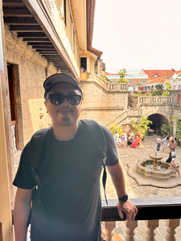

<!DOCTYPE html>
<html lang="en">
<head>
<meta charset="UTF-8">
<meta name="viewport" content="width=device-width, initial-scale=1.0">
<title>Scott Campit</title>
<link rel="preconnect" href="https://fonts.googleapis.com">
<link rel="preconnect" href="https://fonts.gstatic.com" crossorigin>
<link href="https://fonts.googleapis.com/css2?family=Bricolage+Grotesque:wght@400;600;700;800&family=Sora:wght@400;500;600&family=IBM+Plex+Mono:wght@500;600;700&display=swap" rel="stylesheet">
<style>
  *, *::before, *::after { box-sizing: border-box; margin: 0; padding: 0; }

  :root {
    --bg: #D6DAE2;
    --text: #435272;
    --text-light: #5B6B8A;
    --accent: #DB8749;
    --link: #5A7FA0;
    --card-bg: #FFFFFF;
    --border: #CBD5E1;
    --icon-border: #9EAABB;
    --heading-font: 'Bricolage Grotesque', sans-serif;
    --body-font: 'Sora', sans-serif;
    --mono-font: 'IBM Plex Mono', monospace;
  }

  body {
    font-family: var(--body-font);
    background: var(--bg);
    color: var(--text);
    line-height: 1.6;
    min-height: 100vh;
    display: flex;
    flex-direction: column;
  }

  /* ============ HOME PAGE ============ */

  .home-layout {
    max-width: 1100px;
    margin: 0 auto;
    padding: 48px 40px 0;
    flex: 1;
    width: 100%;
    display: flex;
    gap: 48px;
  }
  .home-left {
    flex: 1;
    max-width: 560px;
  }
  .home-right {
    width: 380px;
    flex-shrink: 0;
    padding-top: 80px;
  }

  /* Nav */
  nav {
    margin-bottom: 32px;
  }
  nav a, nav span {
    font-family: var(--body-font);
    font-size: 15px;
    text-decoration: none;
    color: var(--text);
  }
  nav a {
    color: var(--link);
    text-decoration: none;
    font-weight: 400;
  }
  nav a:hover { opacity: 0.8; }
  nav .separator {
    margin: 0 6px;
    color: var(--text-light);
    font-weight: 400;
  }
  nav .active {
    color: var(--text);
    text-decoration: none;
    cursor: default;
    font-weight: 600;
    padding-bottom: 4px;
    border-bottom: 2px solid var(--accent);
  }

  /* Labels */
  .labels {
    font-family: var(--mono-font);
    font-size: 11px;
    font-weight: 600;
    text-transform: uppercase;
    letter-spacing: 0.1em;
    color: var(--accent);
    margin-bottom: 20px;
  }

  /* Hero */
  .hero-header {
    display: flex;
    align-items: center;
    gap: 20px;
    margin-bottom: 28px;
  }
  .profile-photo {
    width: 88px;
    height: 88px;
    border-radius: 50%;
    object-fit: cover;
    flex-shrink: 0;
  }
  .hero-header h1 {
    font-family: var(--heading-font);
    font-size: 44px;
    font-weight: 400;
    letter-spacing: -0.02em;
    color: var(--text);
    line-height: 1.1;
  }

  /* Bio */
  .bio {
    font-family: var(--body-font);
    font-size: 15px;
    line-height: 1.75;
    color: var(--text);
    margin-bottom: 36px;
  }

  /* Get in touch */
  .cta-heading {
    font-family: var(--heading-font);
    font-size: 22px;
    font-weight: 600;
    color: var(--text);
    text-decoration: underline;
    text-decoration-color: var(--accent);
    text-underline-offset: 5px;
    text-decoration-thickness: 2px;
    display: inline-block;
    margin-bottom: 24px;
  }

  /* Social Icons */
  .social-icons {
    display: flex;
    gap: 14px;
    margin-bottom: 40px;
  }
  .social-icon {
    width: 50px;
    height: 50px;
    border-radius: 12px;
    border: 1.5px solid var(--icon-border);
    display: flex;
    align-items: center;
    justify-content: center;
    color: var(--text-light);
    text-decoration: none;
    transition: all 0.2s;
    background: transparent;
  }
  .social-icon:hover {
    border-color: var(--text);
    color: var(--text);
  }
  .social-icon svg {
    width: 22px;
    height: 22px;
  }

  /* Calendly Embed */
  .calendly-inline-widget {
    border-radius: 16px;
    overflow: hidden;
  }

  /* Footer */
  footer {
    text-align: center;
    padding: 32px 24px;
    font-family: var(--body-font);
    font-size: 13px;
    color: var(--text-light);
  }
  footer a {
    color: var(--accent);
    text-decoration: none;
  }
  footer a:hover { text-decoration: underline; }

  /* ============ CASE STUDIES PAGE ============ */

  .cs-page-wrapper {
    max-width: 1100px;
    margin: 0 auto;
    padding: 40px 40px 48px;
    flex: 1;
    width: 100%;
  }

  .cs-brand {
    font-family: var(--heading-font);
    font-size: 16px;
    font-weight: 600;
    color: var(--text);
    margin-bottom: 32px;
    letter-spacing: -0.01em;
  }

  .cs-intro {
    font-family: var(--body-font);
    font-size: 15px;
    color: var(--text-light);
    margin-bottom: 36px;
    line-height: 1.6;
  }

  .cs-grid {
    display: grid;
    grid-template-columns: repeat(4, 1fr);
    gap: 20px;
  }

  .cs-card {
    background: var(--card-bg);
    border-radius: 16px;
    border: 1px solid var(--border);
    overflow: hidden;
    cursor: pointer;
    transition: all 0.25s ease;
    text-decoration: none;
    color: inherit;
    display: flex;
    flex-direction: column;
  }
  .cs-card:hover {
    transform: translateY(-3px);
    box-shadow: 0 12px 36px rgba(67,82,114,0.12);
  }

  .cs-card-image {
    height: 140px;
    background: linear-gradient(135deg, #6B8CAE 0%, #435272 50%, #8A9BB5 100%);
    border-radius: 12px;
    margin: 10px 10px 0;
  }

  .cs-card-body {
    padding: 16px 18px 20px;
    flex: 1;
    display: flex;
    flex-direction: column;
  }

  .cs-card-category {
    display: inline-block;
    font-family: var(--mono-font);
    font-size: 10px;
    font-weight: 600;
    text-transform: uppercase;
    letter-spacing: 0.06em;
    padding: 3px 10px;
    border-radius: 6px;
    background: #E7F2F1;
    color: var(--text);
    margin-bottom: 10px;
    align-self: flex-start;
  }

  .cs-card h3 {
    font-family: var(--heading-font);
    font-size: 17px;
    font-weight: 700;
    margin-bottom: 6px;
    color: var(--text);
    line-height: 1.25;
  }
  .cs-card .summary {
    font-family: var(--body-font);
    font-size: 13px;
    color: var(--text-light);
    line-height: 1.55;
  }

  /* ============ CASE STUDY MODAL ============ */

  .modal-backdrop {
    position: fixed;
    inset: 0;
    background: rgba(67,82,114,0.55);
    backdrop-filter: blur(4px);
    z-index: 9998;
    cursor: pointer;
    animation: fadeInBackdrop 0.25s ease;
  }
  .modal-panel {
    position: fixed;
    top: 50%;
    left: 50%;
    transform: translate(-50%, -50%);
    width: min(660px, 90vw);
    max-height: 90vh;
    background: #FFFFFF;
    z-index: 9999;
    animation: slideInPanel 0.32s cubic-bezier(0.22, 1, 0.36, 1);
    box-shadow: 0 24px 80px rgba(67,82,114,0.25);
    border-radius: 16px;
    overflow: hidden;
    display: flex;
    flex-direction: column;
  }
  .modal-header {
    flex-shrink: 0;
    background: linear-gradient(135deg, #435272 0%, #2d3a52 100%);
    padding: 44px 44px 40px;
    position: relative;
  }
  .modal-close {
    position: absolute;
    top: 20px;
    right: 20px;
    width: 36px;
    height: 36px;
    border-radius: 50%;
    background: rgba(255,255,255,0.1);
    border: 1px solid rgba(255,255,255,0.2);
    cursor: pointer;
    color: #FFFFFF;
    font-size: 16px;
    display: flex;
    align-items: center;
    justify-content: center;
    font-family: var(--body-font);
    transition: background 0.2s;
  }
  .modal-close:hover { background: rgba(255,255,255,0.2); }
  .modal-header .cat-badge {
    display: inline-block;
    font-family: var(--mono-font);
    font-size: 10px;
    font-weight: 600;
    letter-spacing: 0.12em;
    text-transform: uppercase;
    color: #435272;
    background: #E7F2F1;
    border-radius: 6px;
    padding: 4px 10px;
    margin-bottom: 16px;
  }
  .modal-header h1 {
    font-family: var(--heading-font);
    font-size: 28px;
    font-weight: 800;
    color: #FFFFFF;
    margin: 0 0 10px;
    line-height: 1.15;
    letter-spacing: -0.02em;
  }
  .modal-header .subtitle {
    font-family: var(--body-font);
    font-size: 15px;
    color: rgba(255,255,255,0.65);
    margin: 0;
    line-height: 1.6;
  }
  .modal-body {
    flex: 1;
    min-height: 0;
    overflow-y: auto;
    overscroll-behavior: contain;
    padding: 40px 44px 56px;
    background: #F5F7F9;
  }
  .modal-body::-webkit-scrollbar { display: none; }
  .modal-body { -ms-overflow-style: none; scrollbar-width: none; }

  .modal-section { margin-bottom: 32px; }
  .modal-section-label {
    font-family: var(--mono-font);
    font-size: 10px;
    font-weight: 700;
    letter-spacing: 0.14em;
    text-transform: uppercase;
    color: var(--accent);
    margin-bottom: 12px;
  }
  .modal-section p {
    font-family: var(--body-font);
    font-size: 15px;
    line-height: 1.75;
    color: var(--text-light);
    margin: 0;
  }
  .modal-divider {
    height: 1px;
    background: #E2E8EF;
    margin: 0 0 32px;
  }

  .modal-deliverable {
    display: flex;
    gap: 14px;
    margin-bottom: 12px;
    align-items: flex-start;
    background: #FFFFFF;
    border: 1px solid #E2E8EF;
    border-radius: 10px;
    padding: 14px 16px;
  }
  .modal-deliverable-num {
    flex-shrink: 0;
    width: 24px;
    height: 24px;
    border-radius: 50%;
    background: rgba(219,135,73,0.12);
    color: var(--accent);
    font-size: 11px;
    font-weight: 700;
    font-family: var(--mono-font);
    display: flex;
    align-items: center;
    justify-content: center;
  }
  .modal-deliverable p {
    font-family: var(--body-font);
    font-size: 14px;
    line-height: 1.65;
    color: var(--text);
    margin: 0;
  }
  .modal-tech-tag {
    font-family: var(--mono-font);
    font-size: 12px;
    font-weight: 500;
    color: var(--text);
    background: #FFFFFF;
    border: 1px solid #CBD5E1;
    border-radius: 6px;
    padding: 6px 12px;
    display: inline-block;
    margin: 0 8px 8px 0;
  }

  /* Gallery in modal */
  .modal-gallery {
    background: #EAEEF3;
    border-radius: 14px;
    padding: 16px;
    border: 1px solid #E2E8EF;
    margin-bottom: 32px;
  }
  .modal-gallery-img {
    border-radius: 10px;
    overflow: hidden;
    background: #fff;
    display: flex;
    justify-content: center;
    align-items: center;
    min-height: 180px;
  }
  .modal-gallery-img img {
    max-width: 100%;
    max-height: 380px;
    object-fit: contain;
    display: block;
  }
  .modal-gallery-label {
    font-size: 13px;
    color: var(--text-light);
    text-align: center;
    margin-top: 10px;
    font-style: italic;
  }
  .modal-gallery-dots {
    display: flex;
    justify-content: center;
    gap: 8px;
    margin-top: 12px;
  }
  .modal-gallery-dot {
    width: 10px;
    height: 10px;
    border-radius: 50%;
    border: none;
    cursor: pointer;
    background: var(--accent);
    opacity: 0.25;
    transition: opacity 0.2s;
  }
  .modal-gallery-dot.active { opacity: 1; }

  @keyframes fadeInBackdrop {
    from { opacity: 0; }
    to { opacity: 1; }
  }
  @keyframes slideInPanel {
    from { transform: translate(-50%, -50%) scale(0.96); opacity: 0; }
    to { transform: translate(-50%, -50%) scale(1); opacity: 1; }
  }
  @keyframes fadeIn {
    from { opacity: 0; transform: translateY(8px); }
    to { opacity: 1; transform: translateY(0); }
  }
  .fade-in { animation: fadeIn 0.4s ease both; }

  /* Responsive */
  @media (max-width: 900px) {
    .home-layout { flex-direction: column; padding: 32px 24px 0; }
    .home-left { max-width: 100%; }
    .home-right { width: 100%; padding-top: 0; }
    .cs-grid { grid-template-columns: repeat(2, 1fr); }
    .cs-page-wrapper { padding: 32px 24px; }
  }
  @media (max-width: 560px) {
    .cs-grid { grid-template-columns: 1fr; }
    .hero-header h1 { font-size: 32px; }
    .profile-photo { width: 68px; height: 68px; }
    .modal-header { padding: 28px 24px; }
    .modal-body { padding: 28px 24px 40px; }
  }
</style>
</head>
<body>

<div id="app"></div>

<script>
// ============ DATA ============
const PROJECTS = [
  {
    id: "real-estate",
    title: "Real Estate Data Science",
    subtitle: "Predicting property values accurately \u2014 and fairly \u2014 at scale",
    category: "Predictive Analytics",
    color: "#DB8749",
    summary: "Production-grade AI system that predicts real estate property values with the accuracy and fairness standards required by assessors and regulators.",
    problem: "Property assessors need valuations that are both accurate and equitable across different neighborhoods and property types. Traditional models produce static snapshots that miss market trends and can embed systematic bias \u2014 risking regulatory non-compliance and eroding public trust.",
    approach: "We built a living prediction system that accounts for temporal market shifts, detects and corrects for bias against IAAO compliance standards, and handles anomalous data that would otherwise skew results.",
    deliverables: [
      "State-of-the-art forecasting models capturing how property values shift over time",
      "Bias detection and correction engineered directly into the model pipeline to meet IAAO standards",
      "Robust anomaly detection to identify and manage unusual sales or data outliers",
      "Four production pipelines: data ingestion, feature preparation, model training, and performance evaluation"
    ],
    techTags: ["Time-Series Forecasting","Bias Detection","IAAO Compliance","MLOps","Python"],
    images: [
      { src: "images/real-estate-data-science/dashboard_combined.png", label: "Property Valuation Dashboard" },
      { src: "images/real-estate-data-science/correlation_heatmap.png", label: "Feature Correlation Heatmap" },
      { src: "images/real-estate-data-science/advanced_model_summary.png", label: "Advanced Model Summary" },
      { src: "images/real-estate-data-science/distribution_drift_visualization.png", label: "Distribution Drift Analysis" },
      { src: "images/real-estate-data-science/localization_diagnostic_plots.png", label: "Localization Diagnostics" }
    ]
  },
  {
    id: "custom-llms",
    title: "Custom Language Models",
    subtitle: "Teaching AI to speak the language of your business",
    category: "Natural Language Processing",
    color: "#DB8749",
    summary: "Domain-specific LLM adaptation and fine-tuning so AI understands your domain, follows your rules, and performs reliably on the work that matters.",
    problem: "Off-the-shelf AI models are trained on general internet data \u2014 good at many things, but rarely great at the specific tasks a business needs. Companies waste months trying to force generic models into specialized roles.",
    approach: "We adapt and fine-tune language models on custom datasets, combining prompt engineering for quick wins with efficient fine-tuning techniques for deeper specialization \u2014 always choosing the right-sized tool for the job.",
    deliverables: [
      "Custom data pipelines to collect, clean, and structure text datasets for specific tasks",
      "Prompt and context engineering that improves performance before any training is needed",
      "Efficient fine-tuning with LoRA \u2014 adapting large models without full retraining costs",
      "Custom benchmarking and evaluation metrics for honest performance measurement",
      "Classical NLP models where a large AI model is overkill \u2014 the right tool, not the most expensive one"
    ],
    techTags: ["LLM Fine-Tuning","LoRA","Prompt Engineering","NLP","Evaluation Design"],
    images: [
      { src: "images/custom-llms/llm-1.png", label: "Language Model Architecture" },
      { src: "images/custom-llms/llm-2.png", label: "Fine-Tuning Results" },
      { src: "images/custom-llms/llm-3.png", label: "Performance Benchmarks" }
    ]
  },
  {
    id: "warehouse-cv",
    title: "Safety Detection Model",
    subtitle: "AI that sees what humans miss \u2014 before accidents happen",
    category: "Computer Vision",
    color: "#DB8749",
    summary: "Real-time AI that spots warehouse hazards \u2014 missing safety gear, danger zones \u2014 before accidents happen.",
    problem: "Warehouse environments are inherently dangerous. Human safety monitors can\u2019t watch every camera feed simultaneously, and incidents often happen in blind spots or during shift changes. Reactive safety programs only kick in after someone gets hurt.",
    approach: "We partnered with a warehouse operator to build a proactive vision system \u2014 from evaluating the best AI models, through collecting and annotating real warehouse footage, to deploying a live monitoring application.",
    deliverables: [
      "Research and evaluation of the best AI vision models for warehouse hazard detection",
      "Custom dataset of annotated warehouse footage teaching the AI safe vs. unsafe conditions",
      "Fine-tuned model that reliably spots safety issues in real-world conditions",
      "Landing page communicating the product to stakeholders and customers",
      "Live safety monitoring application analyzing camera feeds and flagging hazards in real time"
    ],
    techTags: ["Object Detection","Real-Time Inference","Data Annotation","Edge Deployment","Safety AI"],
    images: [
      { src: "images/warehouse-computer-vision/confusion_matrix_normalized.png", label: "Model Confusion Matrix" },
      { src: "images/warehouse-computer-vision/performance_report.png", label: "Performance Report" },
      { src: "images/warehouse-computer-vision/frame_000001.jpg", label: "Detection Frame" },
      { src: "images/warehouse-computer-vision/frame_000025.jpg", label: "Live Detection" }
    ]
  },
  {
    id: "voicebots",
    title: "Social Engineering Voicebots",
    subtitle: "Testing human vulnerabilities before real attackers do",
    category: "Agentic AI",
    color: "#DB8749",
    summary: "Live AI phone agent that mimics attack tactics to test employees and score your organization\u2019s social engineering risk.",
    problem: "Retailers know their employees are the weakest link in security, but traditional phishing tests only cover email. Real attackers use the phone \u2014 and most companies have no way to test how their teams respond to voice-based social engineering.",
    approach: "We built an agentic AI system that carries on natural phone conversations designed to probe employee awareness, complete with lifelike avatars and custom scenarios tailored to each client\u2019s risk profile.",
    deliverables: [
      "Live phone-based social engineering simulation with natural conversational AI",
      "Vulnerability scoring model grading retailer exposure based on employee responses",
      "Web application with lifelike AI avatar synced in real time with the voicebot",
      "Custom caller identities and scenarios tailored per client \u2014 from IT impersonation to vendor fraud"
    ],
    techTags: ["Voice AI","Agentic Systems","Security Testing","Real-Time Avatars","Behavioral Scoring"],
    images: []
  },
  {
    id: "sports-ai",
    title: "Sports Performance AI",
    subtitle: "Phone camera AI for athlete performance and injury prevention",
    category: "Multi-Modal AI",
    color: "#DB8749",
    summary: "Phone camera AI that analyzes athlete movement and flags injury risk \u2014 no wearables needed.",
    problem: "Injury prevention and performance analysis traditionally require expensive wearable sensors or lab visits. Most athletes \u2014 especially at the youth and amateur level \u2014 never get access to biomechanical analysis that could prevent career-ending injuries.",
    approach: "We built AI that reads human body movement from standard phone and web cameras, then translates raw movement data into sport-specific, actionable scores that athletes and coaches can immediately use.",
    deliverables: [
      "AI models for reading body movement accurately from phone and web cameras",
      "Annotated athlete footage across running and basketball for training data",
      "Custom sport-specific algorithms translating movement into actionable performance and risk scores",
      "Cross-platform mobile and web application for instant AI-powered feedback"
    ],
    techTags: ["Pose Estimation","Biomechanics","Mobile AI","Cross-Platform","Sports Analytics"],
    images: [
      { src: "images/sports-multi-modal/IMG_2413.jpg", label: "Athlete Movement Analysis" },
      { src: "images/sports-multi-modal/IMG_2414.jpg", label: "Pose Detection" },
      { src: "images/sports-multi-modal/IMG_2415.jpg", label: "Movement Tracking" },
      { src: "images/sports-multi-modal/IMG_2417.jpg", label: "Performance Scoring" },
      { src: "images/sports-multi-modal/IMG_2418.jpg", label: "Real-Time Feedback" }
    ]
  },
  {
    id: "bioinformatics",
    title: "Cancer Biomarker AI",
    subtitle: "Finding cancer signals hidden in mountains of biological data",
    category: "Biotech & Life Sciences",
    color: "#DB8749",
    summary: "AI platform that finds cancer signals across genomic, proteomic, and metabolomic data \u2014 accelerating biotech research.",
    problem: "Cancer biomarker discovery requires analyzing massive, multi-dimensional biological datasets \u2014 genomic, proteomic, metabolomic \u2014 and cross-referencing findings against thousands of published studies. Manual analysis takes months and misses patterns humans can\u2019t see.",
    approach: "We partnered with multiple biotech companies to build the data infrastructure and AI tools that let researchers move faster and trust their findings more \u2014 from raw data ingestion through interactive visualization.",
    deliverables: [
      "Systems to ingest, clean, and prepare complex biological datasets across multiple modalities",
      "Machine learning for pattern detection across genomic, proteomic, and metabolomic data",
      "AI-powered literature cross-reference system saving weeks of manual review",
      "Interactive visualizations making complex biological findings interpretable for scientists and stakeholders"
    ],
    techTags: ["Genomics","Multi-Omics","Biomarker Discovery","Data Visualization","ML Pipelines"],
    images: [
      { src: "images/multi-modal-bioinformatics/pca.png", label: "PCA Analysis" },
      { src: "images/multi-modal-bioinformatics/clustermap.png", label: "Cluster Map" },
      { src: "images/multi-modal-bioinformatics/biomarker_1.png", label: "Biomarker Discovery" },
      { src: "images/multi-modal-bioinformatics/sankey.png", label: "Sankey Diagram" }
    ]
  },
  {
    id: "logistics",
    title: "Logistics & Supply Chain",
    subtitle: "Optimizing freight movement with data science",
    category: "Operations & Optimizations",
    color: "#DB8749",
    summary: "Data science for smarter freight \u2014 route optimization, demand forecasting, and real-time supply chain dashboards.",
    problem: "Supply chain operations generate vast amounts of data across shipments, routes, and demand cycles \u2014 but most logistics teams lack the analytical tools to turn that data into better routing decisions, accurate demand forecasts, or real-time operational visibility.",
    approach: "We built analytical systems covering route optimization, demand forecasting, and operational dashboards \u2014 giving logistics teams the visibility and decision-support tools they need to move freight more efficiently.",
    deliverables: [
      "Network analysis and route optimization using graph-based algorithms",
      "Time-series demand forecasting for proactive capacity planning",
      "Freight analytics dashboards for real-time operational visibility",
      "Statistical analysis of shipping patterns across geographies and carriers"
    ],
    techTags: ["Route Optimization","Time-Series","Network Analysis","Dashboards","Operations Research"],
    images: [
      { src: "images/logistics/freight_analytics_dashboard.png", label: "Freight Analytics Dashboard" },
      { src: "images/logistics/tsp_network_analysis.png", label: "Network Analysis" },
      { src: "images/logistics/advanced_time_series_analysis.png", label: "Time Series Analysis" },
      { src: "images/logistics/weight-across-states.png", label: "Weight Distribution by State" }
    ]
  }
];

// ============ STATE ============
const state = {
  page: "home",
  modal: null,
  galleryIdx: 0
};

// ============ RENDER ============
function render() {
  const app = document.getElementById("app");
  let html = "";
  if (state.page === "home") {
    html = renderHome();
  } else if (state.page === "case-studies") {
    html = renderCaseStudies();
  }
  if (state.modal) {
    html += renderModal();
  }
  app.innerHTML = html;
}

function renderNav(activePage) {
  const homeLink = activePage === "home"
    ? '<span class="active">home</span>'
    : '<a href="#" onclick="navigate(\'home\');return false;">home</a>';
  const csLink = activePage === "case-studies"
    ? '<span class="active">case studies</span>'
    : '<a href="#" onclick="navigate(\'case-studies\');return false;">case studies</a>';
  return '<nav>' + homeLink + '<span class="separator">&middot;</span>' + csLink + '</nav>';
}

function renderHome() {
  return '\
    <div class="home-layout fade-in">\
      <div class="home-left">\
        ' + renderNav("home") + '\
        <div class="labels">ENGINEER &middot; BUILDER &middot; BAY AREA NATIVE &middot; FORMER MUSICIAN</div>\
        <div class="hero-header">\
          \
          <h1>Scott Campit</h1>\
        </div>\
        <p class="bio">Most projects fail at the transition between idea and execution. I\u2019ve spent my career working to close that gap. As a biomedical researcher, data scientist, and technology leader, I\u2019ve built products with high societal impact, having worked with companies across multiple industries. I\u2019m the founder of Torchstack, an AI product studio where we work with startups and SMBs on problems worth solving. See some of my past projects below.</p>\
        <div class="cta-heading">Get in touch</div>\
        <div class="social-icons">\
          <a href="https://github.com/ScottCampit?tab=repositories" target="_blank" rel="noopener" class="social-icon" title="GitHub">\
            <svg viewBox="0 0 24 24" fill="none" stroke="currentColor" stroke-width="1.6" stroke-linecap="round" stroke-linejoin="round"><path d="M9 19c-5 1.5-5-2.5-7-3m14 6v-3.87a3.37 3.37 0 0 0-.94-2.61c3.14-.35 6.44-1.54 6.44-7A5.44 5.44 0 0 0 20 4.77 5.07 5.07 0 0 0 19.91 1S18.73.65 16 2.48a13.38 13.38 0 0 0-7 0C6.27.65 5.09 1 5.09 1A5.07 5.07 0 0 0 5 4.77a5.44 5.44 0 0 0-1.5 3.78c0 5.42 3.3 6.61 6.44 7A3.37 3.37 0 0 0 9 18.13V22"/></svg>\
          </a>\
          <a href="https://www.linkedin.com/in/scottcampit/" target="_blank" rel="noopener" class="social-icon" title="LinkedIn">\
            <svg viewBox="0 0 24 24" fill="none" stroke="currentColor" stroke-width="1.6"><rect x="2" y="2" width="20" height="20" rx="3" ry="3"/><line x1="8" y1="11" x2="8" y2="17"/><line x1="8" y1="8" x2="8.01" y2="8"/><path d="M12 17v-3.5c0-1.38 1.12-2.5 2.5-2.5s2.5 1.12 2.5 2.5V17" stroke-linecap="round" stroke-linejoin="round"/></svg>\
          </a>\
          <a href="mailto:scott@torchstack.ai" class="social-icon" title="Email">\
            <svg viewBox="0 0 24 24" fill="none" stroke="currentColor" stroke-width="1.6" stroke-linecap="round" stroke-linejoin="round"><rect x="2" y="4" width="20" height="16" rx="2"/><path d="M22 4L12 13 2 4"/></svg>\
          </a>\
        </div>\
      </div>\
      <div class="home-right">\
        <div class="calendly-inline-widget" data-url="https://calendly.com/torchstack/discovery?hide_event_type_details=1&hide_gdpr_banner=1" style="min-width:320px;height:480px;"></div>\
      </div>\
    </div>\
    <footer>&copy; 2026 &middot; Built with curiosity &amp; too much coffee &middot; A <a href="https://www.amyinsvg.com" target="_blank" rel="noopener">Chunky Melon Design</a> project</footer>\
  ';
}

function renderCaseStudies() {
  var cards = PROJECTS.map(function(p) {
    return '\
    <div class="cs-card" onclick="openModal(\'' + p.id + '\')">\
      <div class="cs-card-image"></div>\
      <div class="cs-card-body">\
        <span class="cs-card-category">' + p.category + '</span>\
        <h3>' + p.title + '</h3>\
        <div class="summary">' + p.summary + '</div>\
      </div>\
    </div>';
  }).join("");

  return '\
    <div class="cs-page-wrapper fade-in">\
      <div class="cs-brand">Scott Campit</div>\
      ' + renderNav("case-studies") + '\
      <p class="cs-intro">A collection of projects spanning AI/ML, product engineering, and research. Click any project to explore the details.</p>\
      <div class="cs-grid">' + cards + '</div>\
    </div>\
    <footer>&copy; 2026 &middot; Built with curiosity &amp; too much coffee &middot; A <a href="https://www.amyinsvg.com" target="_blank" rel="noopener">Chunky Melon Design</a> project</footer>\
  ';
}

function renderModal() {
  var p = state.modal;
  if (!p) return "";

  var deliverables = p.deliverables.map(function(d, i) {
    return '<div class="modal-deliverable"><div class="modal-deliverable-num">' + (i+1) + '</div><p>' + d + '</p></div>';
  }).join("");

  var techTags = p.techTags.map(function(t) {
    return '<span class="modal-tech-tag">' + t + '</span>';
  }).join("");

  var galleryHtml = "";
  if (p.images && p.images.length > 0) {
    var img = p.images[state.galleryIdx];
    var dots = p.images.map(function(_, i) {
      return '<button class="modal-gallery-dot ' + (i === state.galleryIdx ? 'active' : '') + '" onclick="event.stopPropagation();setGallery(' + i + ')"></button>';
    }).join("");
    galleryHtml = '\
      <div class="modal-gallery">\
        <div class="modal-gallery-img"></div>\
        <div class="modal-gallery-label">' + img.label + '</div>\
        <div class="modal-gallery-dots">' + dots + '</div>\
      </div>';
  }

  return '\
    <div class="modal-backdrop" onclick="closeModal()"></div>\
    <div class="modal-panel" onclick="event.stopPropagation()">\
      <div class="modal-header">\
        <button class="modal-close" onclick="closeModal()">\u2715</button>\
        <span class="cat-badge">' + p.category + '</span>\
        <h1>' + p.title + '</h1>\
        <div class="subtitle">' + p.subtitle + '</div>\
      </div>\
      <div class="modal-body">\
        ' + galleryHtml + '\
        <div class="modal-section">\
          <div class="modal-section-label">The Challenge</div>\
          <p>' + p.problem + '</p>\
        </div>\
        <div class="modal-divider"></div>\
        <div class="modal-section">\
          <div class="modal-section-label">Our Approach</div>\
          <p>' + p.approach + '</p>\
        </div>\
        <div class="modal-divider"></div>\
        <div class="modal-section">\
          <div class="modal-section-label">What We Delivered</div>\
          ' + deliverables + '\
        </div>\
        <div class="modal-divider"></div>\
        <div class="modal-section">\
          <div class="modal-section-label">Technologies &amp; Methods</div>\
          <div>' + techTags + '</div>\
        </div>\
      </div>\
    </div>';
}

// ============ NAVIGATION ============
function navigate(page) {
  state.page = page;
  state.modal = null;
  state.galleryIdx = 0;
  window.scrollTo({ top: 0, behavior: "smooth" });
  window.location.hash = page === "home" ? "" : page;
  render();
}

function openModal(id) {
  state.modal = PROJECTS.find(function(p) { return p.id === id; });
  state.galleryIdx = 0;
  document.body.style.overflow = "hidden";
  render();
}

function closeModal() {
  state.modal = null;
  document.body.style.overflow = "";
  render();
}

function setGallery(idx) {
  state.galleryIdx = idx;
  render();
}

// Escape key to close modal
document.addEventListener("keydown", function(e) {
  if (e.key === "Escape" && state.modal) closeModal();
});

// Handle browser back/forward
window.addEventListener("hashchange", function() {
  var hash = window.location.hash.slice(1);
  if (hash === "case-studies") {
    state.page = "case-studies";
    state.modal = null;
  } else {
    state.page = "home";
    state.modal = null;
  }
  state.galleryIdx = 0;
  document.body.style.overflow = "";
  render();
});

// Initial route
var initHash = window.location.hash.slice(1);
if (initHash === "case-studies") {
  state.page = "case-studies";
} else {
  state.page = "home";
}

render();
</script>

<script type="text/javascript" src="https://assets.calendly.com/assets/external/widget.js" async></script>

</body>
</html>
